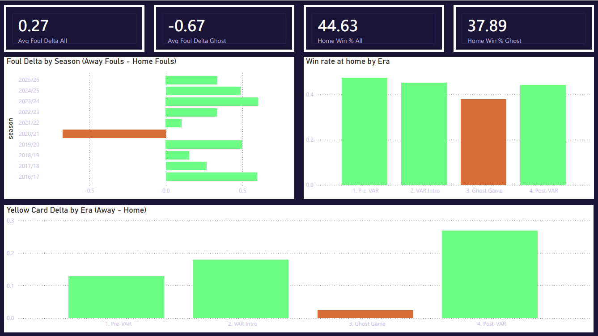
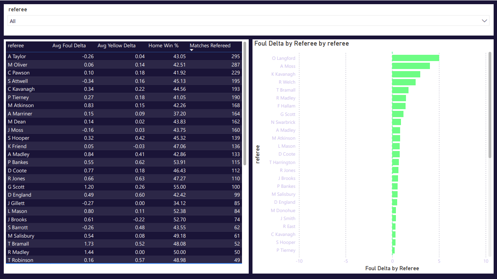
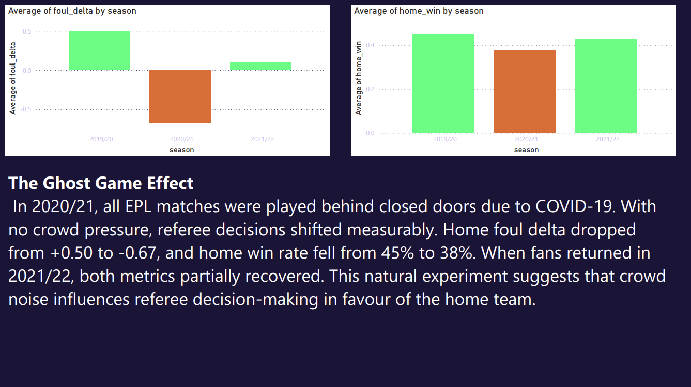

Ten seasons of Premier League data, one question: does crowd pressure change referee decisions? The 2020/21 COVID season, played in empty stadiums, is the natural experiment that answers it.
New to football? A referee makes live decisions that affect who wins. A foul is when a referee penalises a player for an illegal challenge. This project checks whether referees give the home team fewer fouls when their fans are watching.
Foul delta = away fouls minus home fouls per match. Positive means the away team got penalised more, so the home side got the easier ride. If referees were fair, this would sit near zero across thousands of matches. It does not.
In the one season with no fans, the foul delta flipped negative and home win rate hit its lowest point in the dataset. When fans returned, both bounced back.
Every season points up except 2020/21, the one with no fans.
The three referees with the highest average foul delta, among those with 40 or more matches.
Pick any two referees to see their bias stats head to head. The greener number is the more home-biased of the two.
Average foul delta for every referee with 20 or more matches. The bar shows bias direction: right of centre is home bias, left is away bias.
| Referee | Matches | Foul delta | Bias | Verdict |
|---|
Built on a PostgreSQL database hosted on Supabase. Three pages, fully interactive in Power BI Desktop.



Full setup steps, SQL explanations and methodology are in the technical README on GitHub.